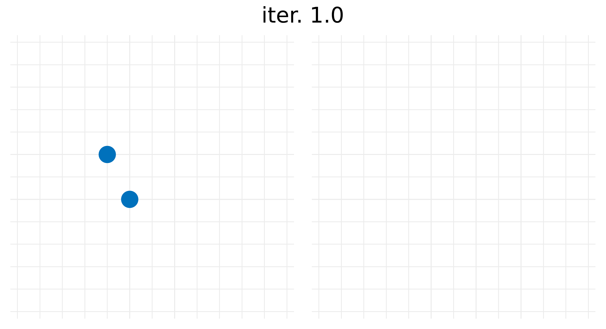
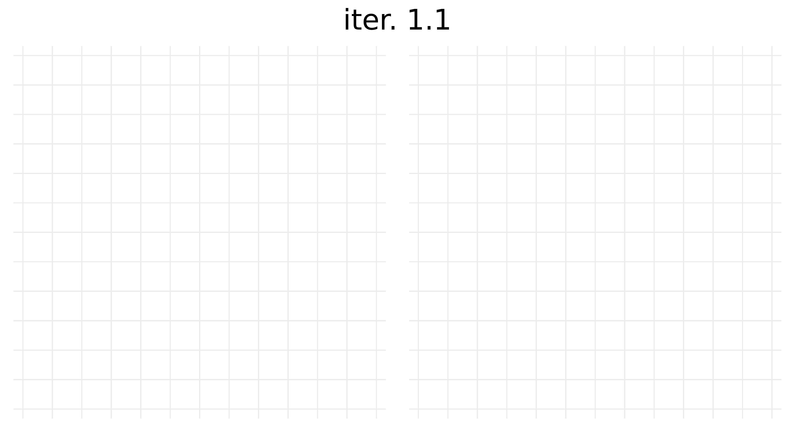

Postdoctoral Researcher in Quantum Information, Technical University of Munich
This page presents illustrative animations of the 2D signal-rule decoders introduced in
Local decoder for the toric code with a high pseudo-threshold, L. Paletta (2026).
Layout
Each lattice site stores:
Defect (−1 stabilizer outcome)
12 binary variables: 1- and 2-forward-signals, 1- and 2-anti-signals (by cardinal direction)
6 integer stacks: 1- and 2-stacks (by cardinal direction)

Local state space
The rule dynamically mediates an effective attractive interaction between defects via the propagation of 1- and 2-forward-signals,
leading to local defect matching. Stack and anti-signal dynamics erase signals after use, ensuring the decoder eventually returns to the zero configuration.
Visualization

Offline regime

Online regime (1% data error probability & perfect meas.)
A single particle is represented per site, according to following priority order